Tutorial on computing invasion fitness
Source:vignettes/articles/computing-invasion-fitness.Rmd
computing-invasion-fitness.RmdInstall and load invasimapr and other core
packages
Install from GitHub (recommended for development) or CRAN (if available) as before.
Tutorial: Computing different invasion fitness options and predicting establishment methods
This appendix shows, step-by-step, how
compute_invasion_fitness() and
compute_establishment_probability() turn the standardised
predictors you built earlier - abiotic suitability \(r^{(z)}\), trait-similar crowding \(C^{(z)}\), and site saturation \(S^{(z)}\) - into an invasion fitness
surface \(\lambda_{is}\) and then into
establishment probabilities \(P_{is}\).
Each option is motivated, precisely defined, and illustrated with
minimal code that you can paste into your analysis.
Different invasion fitness options, linked back to the base formula
Compute different forms of invasion fitness
compute_invasion_fitness() combines the
trait-space geometry (where invaders sit relative to
the resident cloud and convex hull) with environmental
alignment and biotic resistance into a single
linear index of invasion fitness:
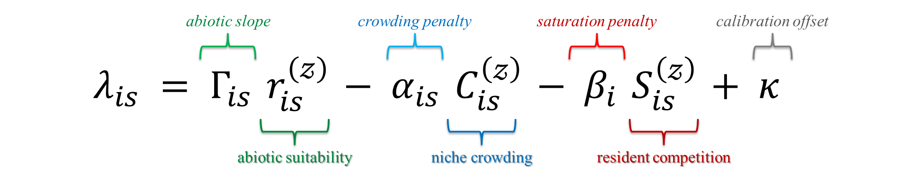
where \(\Gamma_{is}\) scales the abiotic signal, \(\alpha_{is}\) penalises trait overlap, and \(\beta_i\) captures site-wide saturation pressure. Five options (A-E) let you move from a simple baseline to trait- and site-varying sensitivity without changing inputs.
:hourglass_flowing_sand: Inputs and outputs (at a glance): Inputs: matrices \(r^{(z)}_{is}\), \(C^{(z)}_{is}\), \(S^{(z)}_{is}\); vectors/matrices \(\alpha,\beta,\theta,\Gamma\) depending on option; optional calibration data for residents. Output: site × invader matrix \(\lambda_{is}\) plus an optional tidy long table for mapping and summaries.
:information_source: Why this matters: Having A-E in one place keeps analyses comparable and auditable. Start with a canonical baseline (A), then add realism: a global abiotic slope (B), trait-dependent scaling (C), site-varying slopes (D), or a signed saturation effect (E) when facilitation is plausible.
:warning: Practical checks and tips:
- Keep row/column names aligned across all matrices (sites as rownames; invaders as colnames).
- Use
calibrate_kappa = TRUEif you want residents centred near \(\lambda \approx 0\). - Do not include random slopes for \(S^{(z)}\) (it is site-only by construction).
- Inspect distributions of \(\alpha,\beta,\gamma\) (or \(\Gamma\)); extreme values usually indicate scaling or model-fit issues.
- Prefer signed \(\beta\) (Option E) only with a clear ecological rationale.
Each example below is a special case of the formula above that constrain which terms vary by site \(s\) and/or invader \(i\).
Table S1: How each option instantiates the base form
| Option | \(\Gamma_{is}\) (abiotic slope) | \(\alpha\) (crowding) | \(\beta\) (saturation) | \(\kappa\) |
|---|---|---|---|---|
| A | \(1\) (all ones) | \(\alpha_{is} \leftarrow \alpha_i\) (broadcast to all sites) | \(\beta_i \ge 0\) | \(0\) (or calibrated) |
| B | \(\theta_0\) (scalar, broadcast to all \(s,i\)) | \(\alpha_{is} \leftarrow \alpha_i\) | \(\beta_i \ge 0\) | optional calibration |
| C | \(\theta_i\) (vector, broadcast over sites: \(\Gamma_{is}=\theta_i\)) | \(\alpha_{is} \leftarrow \alpha_i\) | \(\beta_i \ge 0\) | optional calibration |
| D | \(\Gamma_{is}\) (site-varying; e.g., from random slopes) | \(\alpha_{is}\) (site-varying; from random slopes) | \(\beta_i \ge 0\) | optional calibration |
| E | \(\theta_0\) (as in B) | \(\alpha_{is} \leftarrow \alpha_i\) | \(\beta_i^{(\text{signed})}\) (can be < 0 for facilitation) | optional calibration |
Broadcasting means: a vector by invader (e.g., \(\theta_i\) or \(\alpha_i\)) is expanded to an \(S\times I\) matrix by repeating each column across sites.
Where the pieces come from
-
\(\theta_0,\ \theta_i,\ \alpha_i,\
\beta_i,\ \beta_i^{(\text{signed})}\): from
derive_sensitivities(). -
\(\alpha_{is}\): from
site_varying_alpha()(random slopes on \(C_z\)). - \(\Gamma_{is}\): either broadcast \(\theta_0\)/\(\theta_i\) or a site-varying matrix if modeled.
- \(\kappa\) (calibration offset): optional shift so the mean resident \(\lambda\) is ~0 (when you calibrate).
Pick a level of complexity: Start with B (parsimonious, global \(\theta_0\)), move to C if traits clearly modulate abiotic response, use D when site random slopes matter, and switch to E only if you want to allow signed saturation effects.
Option A: Baseline (\(\gamma\) = 1, \(k\) = 0)
A transparent first look: abiotic \(-\) crowding \(-\) saturation on a common, site-standardised scale.
\[ \lambda_{is} = r^{(z)}_{is} - \alpha_i\, C^{(z)}_{is} - \beta_i\, S^{(z)}_{is}. \]
:bulb: When to use: Rapid scans and communication; no extra scaling on \(r^{(z)}\); \(\alpha_i,\beta_i \ge 0\) as penalties.
# Option A
alpha_i = fit$sensitivities$alpha_i
beta_i = fit$sensitivities$beta_i
outA = invasimapr::compute_invasion_fitness(
r_is_z, C_is_z, S_is_z,
option = "A",
alpha_i = alpha_i, # named vector by invader
beta_i = beta_i, # named vector by invader
return_long = TRUE
)
str(outA,1)
#> List of 7
#> $ lambda_is : num [1:415, 1:10] -1.915 -5.174 -1.21 0.221 -1.276 ...
#> ..- attr(*, "dimnames")=List of 2
#> $ GI : num [1:415, 1:10] 1 1 1 1 1 1 1 1 1 1 ...
#> ..- attr(*, "dimnames")=List of 2
#> $ AI : num [1:415, 1:10] 0.982 0.982 0.982 0.982 0.982 ...
#> ..- attr(*, "dimnames")=List of 2
#> $ BI : Named num [1:10] 0.0883 0.0695 0.0833 0.0925 0.045 ...
#> ..- attr(*, "names")= chr [1:10] "inv1" "inv2" "inv3" "inv4" ...
#> $ kappa : num 0
#> $ option : chr "Option A (gamma=1)"
#> $ lambda_long: tibble [4,150 × 7] (S3: tbl_df/tbl/data.frame):bar_chart: Map mean \(\lambda\) by site to see invasibility patterns.
# outA already created with compute_invasion_fitness(..., return_long = TRUE)
# 1) Site means
lambda_siteA = outA$lambda_long |>
dplyr::group_by(site) |>
dplyr::summarise(mean_lambda = mean(lambda, na.rm = TRUE), .groups = "drop") |>
dplyr::left_join(site_df, by = "site") # needs columns: site, x, y
# 2) Continuous map (blue = low, red = high; 0-centered)
p_lambdaA = ggplot2::ggplot(lambda_siteA, ggplot2::aes(x, y, fill = mean_lambda)) +
ggplot2::geom_tile() +
ggplot2::scale_fill_gradient2(name = "Mean \u03BB", midpoint = 0) + # or `expression("Mean " * lambda)`
ggplot2::labs(
title = "Mean invasion fitness (\u03BB) by site - Option A", # or `expression("Mean invasion fitness (" * lambda * ") by site — Option A")`
x = "Longitude", y = "Latitude"
) +
ggplot2::theme_minimal()
if (exists("rsa")) p_lambdaA = p_lambdaA +
ggplot2::geom_sf(data = rsa, inherit.aes = FALSE, fill = NA, color = "black", size = 0.3)
print(p_lambdaA)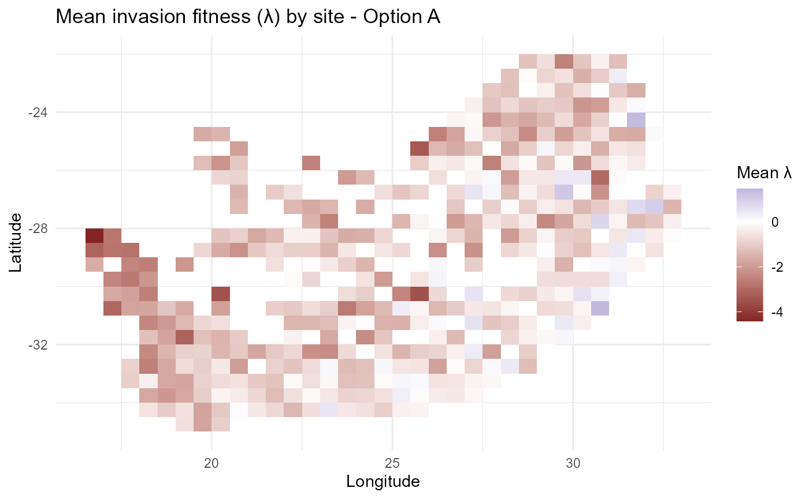
# 3) Optional: discrete “risk bands” (quintiles)
lambda_siteA$band = cut(
lambda_siteA$mean_lambda,
breaks = stats::quantile(lambda_siteA$mean_lambda, probs = seq(0, 1, 0.2), na.rm = TRUE),
include.lowest = TRUE,
labels = c("very-low","low","medium","high","very-high")
)
p_lambdaA_bands = ggplot2::ggplot(lambda_siteA, ggplot2::aes(x, y, fill = band)) +
ggplot2::geom_tile() +
ggplot2::scale_fill_brewer(palette = "RdYlBu", direction = 1, name = "Site invasibility") +
ggplot2::labs(title = "Site invasibility bands (quintiles) - Option A",
x = "Longitude", y = "Latitude") +
ggplot2::theme_minimal()
if (exists("rsa")) p_lambdaA_bands = p_lambdaA_bands +
ggplot2::geom_sf(data = rsa, inherit.aes = FALSE, fill = NA, color = "black", size = 0.3)
print(p_lambdaA_bands)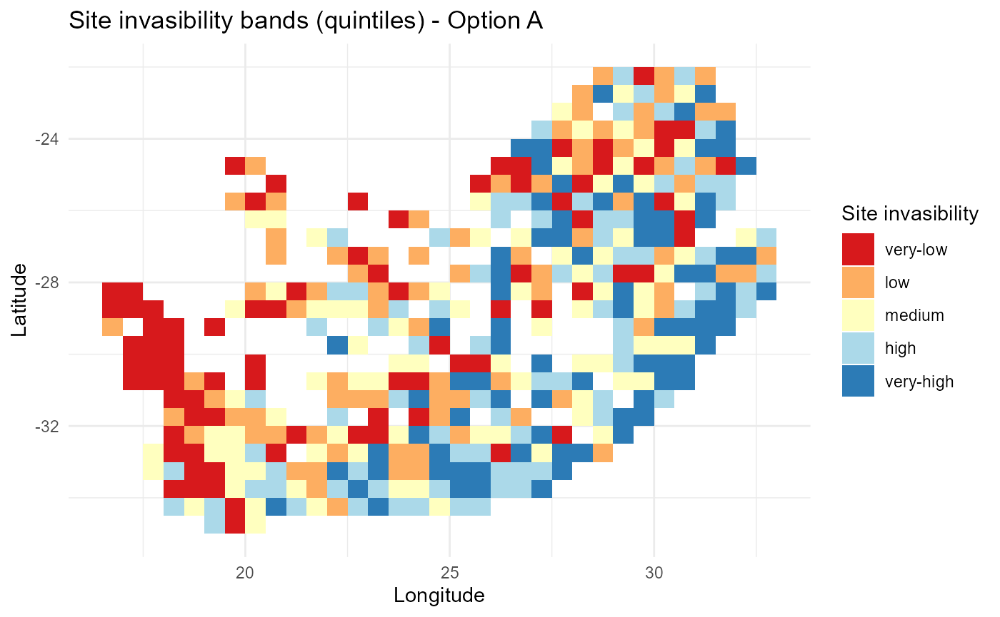
:chart_with_upwards_trend: Figure 1: Baseline spatial pattern of mean invasion fitness \(\overline{\lambda}_{is}\) with zero-centred colour scaling and optional boundary overlay. Positive regions (red) indicate conditions favouring establishment; negative regions (blue) reflect net biotic penalties or abiotic misalignment. A discrete quintile variant summarises relative invasibility for communication.
Option B: Parsimonious abiotic scaling (\(\gamma\) = \(\theta_0\))
A single slope \(\theta_0\) rescales the abiotic term relative to biotic penalties.
\[ \lambda_{is} = \theta_0\, r^{(z)}_{is} - \alpha_i\, C^{(z)}_{is} - \beta_i\, S^{(z)}_{is}. \]
:bulb: When to use: Auxiliary fits suggest a strong global slope on \(r^{(z)}\) but little trait dependence.
outB = invasimapr::compute_invasion_fitness(
r_is_z, C_is_z, S_is_z,
option = "B",
alpha_i = alpha_i, beta_i = beta_i,
theta0 = 0.8, # example value
return_long = TRUE
)
str(outB,1)
#> List of 7
#> $ lambda_is : num [1:415, 1:10] -1.7504 -4.7215 -1.258 -0.0204 -1.212 ...
#> ..- attr(*, "dimnames")=List of 2
#> $ GI : num [1:415, 1:10] 0.8 0.8 0.8 0.8 0.8 0.8 0.8 0.8 0.8 0.8 ...
#> ..- attr(*, "dimnames")=List of 2
#> $ AI : num [1:415, 1:10] 0.982 0.982 0.982 0.982 0.982 ...
#> ..- attr(*, "dimnames")=List of 2
#> $ BI : Named num [1:10] 0.0883 0.0695 0.0833 0.0925 0.045 ...
#> ..- attr(*, "names")= chr [1:10] "inv1" "inv2" "inv3" "inv4" ...
#> $ kappa : num 0
#> $ option : chr "Option B (gamma=theta_0)"
#> $ lambda_long: tibble [4,150 × 7] (S3: tbl_df/tbl/data.frame):bar_chart: Computes *site-mean invasion fitness** \(\overline{\lambda}_{is}\) and visualises it as a zero-centred continuous surface (blue → low, red → high). A discrete quintile map (“risk bands”) summarises relative invasibility for communication. Optional national boundary overlays provide geographic context.
# 1) Site means for Option B
lambda_siteB = outB$lambda_long |>
dplyr::group_by(site) |>
dplyr::summarise(mean_lambda = mean(lambda, na.rm = TRUE), .groups = "drop") |>
dplyr::left_join(site_df, by = "site")
# 2) Continuous map (0-centered)
p_lambdaB = ggplot2::ggplot(lambda_siteB, ggplot2::aes(x, y, fill = mean_lambda)) +
ggplot2::geom_tile() +
ggplot2::scale_fill_gradient2(name = "Mean \u03BB", midpoint = 0) +
ggplot2::labs(title = "Mean invasion fitness (\u03BB) by site — Option B",
x = "Longitude", y = "Latitude") +
ggplot2::theme_minimal()
if (exists("rsa")) p_lambdaB = p_lambdaB +
ggplot2::geom_sf(data = rsa, inherit.aes = FALSE, fill = NA, color = "black", size = 0.3)
print(p_lambdaB)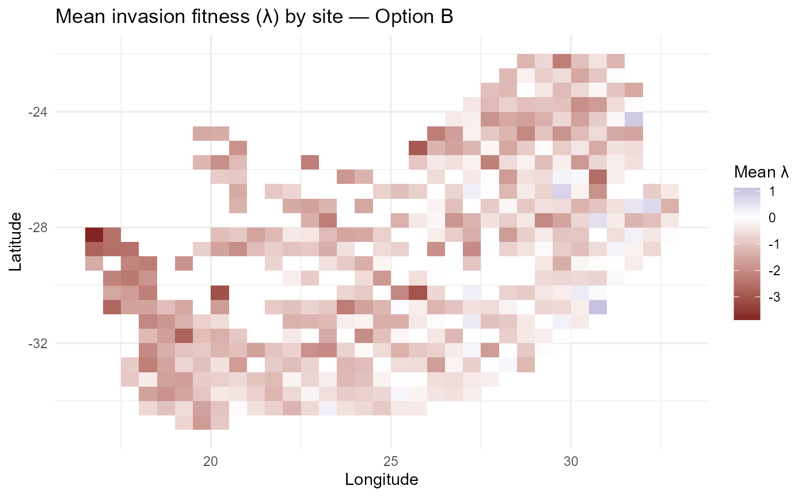
# 3) Optional: discrete “risk bands” (quintiles) for Option B
lambda_siteB$band = cut(
lambda_siteB$mean_lambda,
breaks = stats::quantile(lambda_siteB$mean_lambda, probs = seq(0, 1, 0.2), na.rm = TRUE),
include.lowest = TRUE,
labels = c("very-low", "low", "medium", "high", "very-high")
)
p_lambdaB_bands = ggplot2::ggplot(lambda_siteB, ggplot2::aes(x, y, fill = band)) +
ggplot2::geom_tile() +
ggplot2::scale_fill_brewer(palette = "RdYlBu", direction = 1, name = "Site invasibility") +
ggplot2::labs(title = "Site invasibility bands (quintiles) — Option B",
x = "Longitude", y = "Latitude") +
ggplot2::theme_minimal()
if (exists("rsa")) p_lambdaB_bands = p_lambdaB_bands +
ggplot2::geom_sf(data = rsa, inherit.aes = FALSE, fill = NA, color = "black", size = 0.3)
print(p_lambdaB_bands)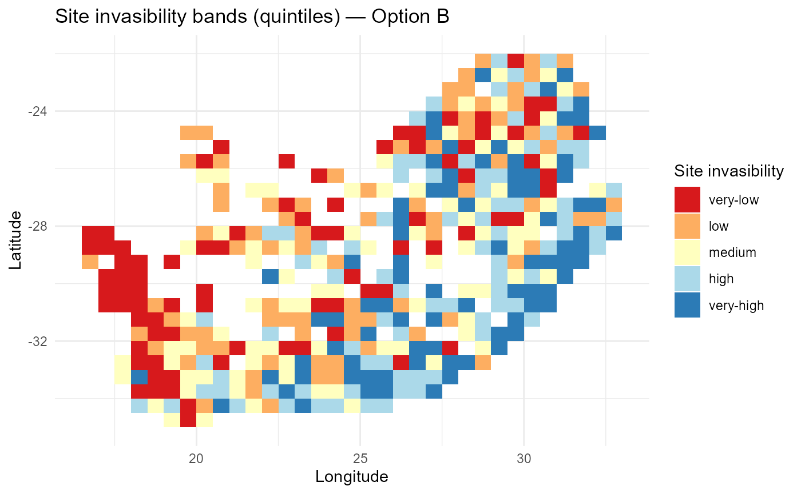
:chart_with_upwards_trend: Figure 2: Spatial pattern of mean invasion fitness under a single abiotic rescaling \(\theta_0\). Global down-/up-weighting of \(r^{(z)}\) compresses or amplifies contrasts relative to Option A, while biotic penalties remain unchanged.
Option C: Trait-varying abiotic scaling (\(\gamma_i\) = \(\theta_i\))
Different invader strategies convert abiotic alignment to fitness at different rates (learned from the auxiliary GLMM in trait space).
\[ \lambda_{is} = \theta_i\, r^{(z)}_{is} - \alpha_i\, C^{(z)}_{is} - \beta_i\, S^{(z)}_{is}. \]
:bulb: When to use: There is clear trait × r interaction; likelihood-ratio tests favour trait-varying slopes.
theta_i = fit$sensitivities$theta_i
outC = invasimapr::compute_invasion_fitness(
r_is_z, C_is_z, S_is_z,
option = "C",
alpha_i = alpha_i, beta_i = beta_i,
theta_i = theta_i, # named vector by invader
return_long = TRUE
)
str(outC, 1)
#> List of 7
#> $ lambda_is : num [1:415, 1:10] -1.283 -3.433 -1.394 -0.709 -1.031 ...
#> ..- attr(*, "dimnames")=List of 2
#> $ GI : num [1:415, 1:10] 0.231 0.231 0.231 0.231 0.231 ...
#> ..- attr(*, "dimnames")=List of 2
#> $ AI : num [1:415, 1:10] 0.982 0.982 0.982 0.982 0.982 ...
#> ..- attr(*, "dimnames")=List of 2
#> $ BI : Named num [1:10] 0.0883 0.0695 0.0833 0.0925 0.045 ...
#> ..- attr(*, "names")= chr [1:10] "inv1" "inv2" "inv3" "inv4" ...
#> $ kappa : num 0
#> $ option : chr "Option C (gamma=theta_i)"
#> $ lambda_long: tibble [4,150 × 7] (S3: tbl_df/tbl/data.frame)Optional calibration. Align invader and resident scales using resident moments and trait-plane slopes.
Q_res = fit$traits$Q_res
resC = invasimapr::compute_invasion_fitness(
r_is_z, C_is_z, S_is_z,
option = "C",
alpha_i = alpha_i, beta_i = beta_i, theta_i = theta_i,
calibrate_kappa = TRUE,
r_js_z = r_js_z, C_js_z = C_js_z, S_js_z = S_js_z,
Q_res = Q_res,
a0 = fit$sensitivities$a0, a1 = fit$sensitivities$a1, a2 = fit$sensitivities$a2,
b0 = fit$sensitivities$b0, b1 = fit$sensitivities$b1, b2 = fit$sensitivities$b2,
return_long = TRUE
)
str(resC, 1)
#> List of 7
#> $ lambda_is : num [1:415, 1:10] -1.28 -3.43 -1.39 -0.71 -1.03 ...
#> ..- attr(*, "dimnames")=List of 2
#> $ GI : num [1:415, 1:10] 0.231 0.231 0.231 0.231 0.231 ...
#> ..- attr(*, "dimnames")=List of 2
#> $ AI : num [1:415, 1:10] 0.982 0.982 0.982 0.982 0.982 ...
#> ..- attr(*, "dimnames")=List of 2
#> $ BI : Named num [1:10] 0.0883 0.0695 0.0833 0.0925 0.045 ...
#> ..- attr(*, "names")= chr [1:10] "inv1" "inv2" "inv3" "inv4" ...
#> $ kappa : num -0.000987
#> $ option : chr "Option C (gamma=theta_i)"
#> $ lambda_long: tibble [4,150 × 7] (S3: tbl_df/tbl/data.frame):bar_chart: Aggregates \(\lambda_{is}\) to site means then bins them into robust quintiles to handle ties. The discrete map emphasises where trait-specific abiotic conversion (\(\theta_i\)) yields elevated or suppressed invasibility after calibration.
# Site means (Option C)
lambda_siteC = resC$lambda_long |>
dplyr::group_by(site) |>
dplyr::summarise(mean_lambda = mean(lambda, na.rm = TRUE), .groups = "drop") |>
dplyr::left_join(site_df, by = "site")
# Robust quintile bands (handles ties / constant vectors)
q = stats::quantile(lambda_siteC$mean_lambda, probs = seq(0, 1, 0.2), na.rm = TRUE)
if (length(unique(q)) < 6L) {
# fallback if quantiles are not strictly increasing
q = seq(min(lambda_siteC$mean_lambda, na.rm = TRUE),
max(lambda_siteC$mean_lambda, na.rm = TRUE),
length.out = 6L)
}
lambda_siteC$band = cut(
lambda_siteC$mean_lambda,
breaks = q, include.lowest = TRUE,
labels = c("very-low", "low", "medium", "high", "very-high")
)
# Map: discrete risk bands (Option C)
p_lambdaC_bands = ggplot2::ggplot(lambda_siteC, ggplot2::aes(x = x, y = y, fill = band)) +
ggplot2::geom_tile() +
ggplot2::scale_fill_brewer(palette = "RdYlBu", direction = 1, name = "Site invasibility") +
ggplot2::labs(title = "Site invasibility bands (quintiles) — Option C",
x = "Longitude", y = "Latitude") +
ggplot2::theme_minimal(base_size = 12) +
ggplot2::theme(panel.grid = ggplot2::element_blank())
if (exists("rsa")) {
p_lambdaC_bands = p_lambdaC_bands +
ggplot2::geom_sf(data = rsa, inherit.aes = FALSE, fill = NA, color = "black", size = 0.3)
}
print(p_lambdaC_bands):chart_with_upwards_trend: Figure 3: Site-level invasibility bands with trait-varying abiotic slopes \(\theta_i\). Heterogeneity reflects trait × abiotic interactions learned from the auxiliary model; warm bands denote sites where particular strategies convert abiotic alignment into fitness more efficiently.
Option D: Site-varying abiotic and crowding (\(\gamma_{is}\), \(\alpha_{is}\))
Allow local heterogeneity via site random slopes: some places amplify abiotic gains (\(\Gamma_{is}\)), others intensify crowding penalties (\(\alpha_{is}\)).
\[ \lambda_{is} = \Gamma_{is}\, r^{(z)}_{is} - \alpha_{is}\, C^{(z)}_{is} - \beta_i\, S^{(z)}_{is}. \]
:bulb: When to use: Auxiliary model includes
(0 + r_z || site) and/or (0 + C_z || site)
with non-trivial variance.
outD = invasimapr::compute_invasion_fitness(
r_is_z, C_is_z, S_is_z,
option = "D",
Gamma_is = Gamma_is, # site × invader matrix
alpha_is = alpha_is, # site × invader matrix, ≥ 0
beta_i = beta_i,
return_long = TRUE
)
str(outD, 1)
#> List of 7
#> $ lambda_is : num [1:415, 1:10] -1.283 -3.433 -1.394 -0.709 -1.031 ...
#> ..- attr(*, "dimnames")=List of 2
#> $ GI : num [1:415, 1:10] 0.231 0.231 0.231 0.231 0.231 ...
#> ..- attr(*, "dimnames")=List of 2
#> $ AI : num [1:415, 1:10] 0.982 0.982 0.982 0.982 0.982 ...
#> ..- attr(*, "dimnames")=List of 2
#> $ BI : Named num [1:10] 0.0883 0.0695 0.0833 0.0925 0.045 ...
#> ..- attr(*, "names")= chr [1:10] "inv1" "inv2" "inv3" "inv4" ...
#> $ kappa : num 0
#> $ option : chr "Option D (Gamma_is, alpha_is)"
#> $ lambda_long: tibble [4,150 × 7] (S3: tbl_df/tbl/data.frame):bar_chart: Summarises \(\lambda_{is}\) by site and renders quintile bands to reveal local departures driven by site-specific abiotic amplification \(\Gamma_{is}\) and crowding penalties \(\alpha_{is}\). This isolates geographic hotspots where environment “bites” harder or crowding intensifies.
# Site means (Option D)
lambda_siteD = outD$lambda_long |>
dplyr::group_by(site) |>
dplyr::summarise(mean_lambda = mean(lambda, na.rm = TRUE), .groups = "drop") |>
dplyr::left_join(site_df, by = "site")
# Robust quintile bands (handles ties / constant vectors)
q = stats::quantile(lambda_siteD$mean_lambda, probs = seq(0, 1, 0.2), na.rm = TRUE)
if (length(unique(q)) < 6L) {
# fallback if quantiles are not strictly increasing
q = seq(min(lambda_siteD$mean_lambda, na.rm = TRUE),
max(lambda_siteD$mean_lambda, na.rm = TRUE),
length.out = 6L)
}
lambda_siteD$band = cut(
lambda_siteD$mean_lambda,
breaks = q, include.lowest = TRUE,
labels = c("very-low", "low", "medium", "high", "very-high")
)
# Map: discrete risk bands (Option D)
p_lambdaD_bands = ggplot2::ggplot(lambda_siteD, ggplot2::aes(x = x, y = y, fill = band)) +
ggplot2::geom_tile() +
ggplot2::scale_fill_brewer(palette = "RdYlBu", direction = 1, name = "Site invasibility") +
ggplot2::labs(title = "Site invasibility bands (quintiles) — Option D",
x = "Longitude", y = "Latitude") +
ggplot2::theme_minimal(base_size = 12) +
ggplot2::theme(panel.grid = ggplot2::element_blank())
if (exists("rsa")) {
p_lambdaD_bands = p_lambdaD_bands +
ggplot2::geom_sf(data = rsa, inherit.aes = FALSE, fill = NA, color = "black", size = 0.3)
}
print(p_lambdaD_bands)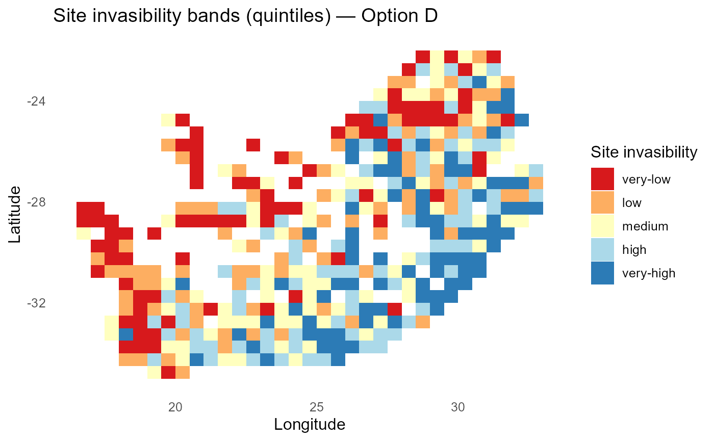
:chart_with_upwards_trend: Figure 4: Invasibility bands under site-varying \(\Gamma_{is}\) and \(\alpha_{is}\). Spatial structure highlights locations with amplified abiotic gains (high \(\Gamma_{is}\)) or stronger crowding (large \(\alpha_{is}\)), indicating where establishment pressure is locally enhanced or suppressed
:bulb: Interpretation: Heatmaps of \(\Gamma_{is}\) and \(\alpha_{is}\) reveal where environment “bites” harder and where similarity pressure is strongest.
Option E: Signed saturation effect (\(\beta\) may be ±)
Let \(S^{(z)}\) increase fitness for some invaders (facilitation/productivity), using a signed \(\beta_i\).
\[ \lambda_{is} = \theta_0\, r^{(z)}_{is} - \alpha_i\, C^{(z)}_{is} + \beta^{(\mathrm{signed})}_i\, S^{(z)}_{is}. \]
:bulb: When to use: There is a defensible ecological case for facilitation; signed slopes improve fit/realism.
outE = invasimapr::compute_invasion_fitness(
r_is_z, C_is_z, S_is_z,
option = "E",
alpha_i = alpha_i,
beta_signed_i = beta_signed_i, # named vector, can be < 0 or > 0
theta0 = 1,
return_long = TRUE
)
str(outE, 1)
#> List of 7
#> $ lambda_is : num [1:415, 1:10] -1.884 -5.37 -0.962 0.532 -0.643 ...
#> ..- attr(*, "dimnames")=List of 2
#> $ GI : num [1:415, 1:10] 1 1 1 1 1 1 1 1 1 1 ...
#> ..- attr(*, "dimnames")=List of 2
#> $ AI : num [1:415, 1:10] 0.982 0.982 0.982 0.982 0.982 ...
#> ..- attr(*, "dimnames")=List of 2
#> $ BI : Named num [1:10] -0.0883 -0.0695 -0.0833 -0.0925 -0.045 ...
#> ..- attr(*, "names")= chr [1:10] "inv1" "inv2" "inv3" "inv4" ...
#> $ kappa : num 0
#> $ option : chr "Option E (signed S)"
#> $ lambda_long: tibble [4,150 × 7] (S3: tbl_df/tbl/data.frame):bar_chart: Computes site means and quintile bands when saturation \(S^{(z)}\) can facilitate or inhibit via signed \(\beta_i\). Positive \(\beta_i\) shifts risk upward where \(S^{(z)}\) is high, while negative \(\beta_i\) dampens risk.
# Site means (Option E)
lambda_siteE = outE$lambda_long |>
dplyr::group_by(site) |>
dplyr::summarise(mean_lambda = mean(lambda, na.rm = TRUE), .groups = "drop") |>
dplyr::left_join(site_df, by = "site")
# Robust quintile bands (handles ties / constant vectors)
q = stats::quantile(lambda_siteE$mean_lambda, probs = seq(0, 1, 0.2), na.rm = TRUE)
if (length(unique(q)) < 6L) {
# fallback if quantiles are not strictly increasing
q = seq(min(lambda_siteE$mean_lambda, na.rm = TRUE),
max(lambda_siteE$mean_lambda, na.rm = TRUE),
length.out = 6L)
}
lambda_siteE$band = cut(
lambda_siteE$mean_lambda,
breaks = q, include.lowest = TRUE,
labels = c("very-low", "low", "medium", "high", "very-high")
)
# Map: discrete risk bands (Option C)
p_lambdaE_bands = ggplot2::ggplot(lambda_siteE, ggplot2::aes(x = x, y = y, fill = band)) +
ggplot2::geom_tile() +
ggplot2::scale_fill_brewer(palette = "RdYlBu", direction = 1, name = "Site invasibility") +
ggplot2::labs(title = "Site invasibility bands (quintiles) — Option E",
x = "Longitude", y = "Latitude") +
ggplot2::theme_minimal(base_size = 12) +
ggplot2::theme(panel.grid = ggplot2::element_blank())
if (exists("rsa")) {
p_lambdaE_bands = p_lambdaE_bands +
ggplot2::geom_sf(data = rsa, inherit.aes = FALSE, fill = NA, color = "black", size = 0.3)
}
print(p_lambdaE_bands)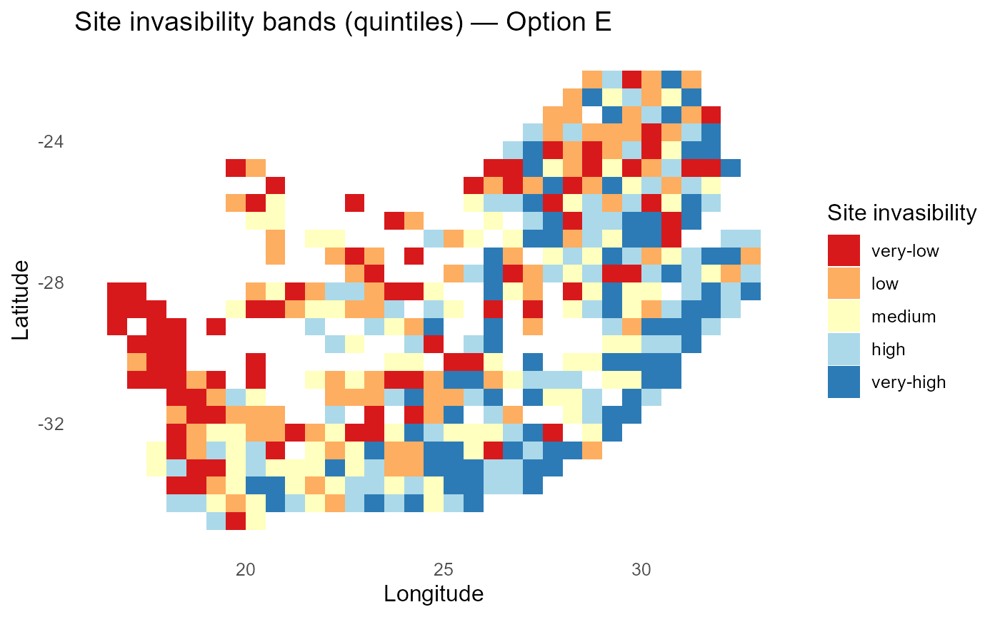
:chart_with_upwards_trend: Figure 5:Invasibility bands with signed saturation effects. Warm zones indicate contexts where saturation/facilitation elevates fitness (positive \(\beta_i\)); cool zones mark inhibitory responses (negative \(\beta_i\)).
Predict establishment probability using different methods
compute_establishment_probability() maps \(\lambda_{is}\) to a probability \(P_{is}\) using a link
function. You can provide \(\lambda\) directly or the function will
(re)build it from \(r^{(z)}, C^{(z)},
S^{(z)}\) plus coefficients. Choose among
probit, logistic, a hard
0/1 rule, or an uncertainty-aware probit that
uses predictive standard errors.
:hourglass_flowing_sand: Inputs and outputs (at a
glance): Inputs: either lambda_is
or the components \(r^{(z)},
C^{(z)}, S^{(z)}\) with \(\gamma/\Gamma, \alpha, \beta\); a scale
(sigma or tau) depending on method; optional
site_df for maps. Output: site × invader
matrix \(P_{is}\), a tidy long table,
and ready-to-use maps (site mean, invader ranking, heatmap).
:information_source: Why this matters: A probability scale is intuitive for planning and communication. The link choice controls steepness around \(\lambda=0\) and whether you propagate parameter uncertainty.
:warning: Practical checks and tips:
- If maps are flat at ~0.5, your scale
(
sigma/tau) may be too large or \(\lambda \approx 0\). - Use predictive SD when uncertainty communication is important (edges of trait space; sparse data).
- For binary maps, co-report a probabilistic view where decisions are marginal.
Method A: Probit \(P=\Phi(\lambda/\sigma)\)
A normal CDF turns \(\lambda\) into a probability with a single noise scale \(\sigma\).
outP = invasimapr::compute_establishment_probability(
r_is_z, C_is_z, S_is_z,
gamma = gamma, alpha = alpha, beta = beta, # or pass lambda_is directly
method = "probit", sigma = 1,
site_df = site_df, return_long = TRUE, make_plots = TRUE
)
str(outP, 1)
#> List of 7
#> $ p_is : num [1:415, 1:10] 0.2057 0.0118 0.5943 0.8867 0.3753 ...
#> ..- attr(*, "dimnames")=List of 2
#> $ lambda_is : num [1:415, 1:10] -0.821 -2.265 0.239 1.209 -0.318 ...
#> ..- attr(*, "dimnames")=List of 2
#> $ sigma_used : num 1
#> $ method : chr "probit"
#> $ option_label: chr "probit"
#> $ prob_long : tibble [4,150 × 7] (S3: tbl_df/tbl/data.frame)
#> $ plots :List of 3:bar_chart: Maps the mean establishment probability \(\mathbb{E}[P_{is}]\) per site, the expected number of establishing invaders \(\sum_i P_{is}\), and optional quintile bands for communication. Also prints a quick invader ranking by mean probability.
# ---- 1) Get a long table (site × invader → probability) ----------------------
p_long = if (!is.null(outP$p_long)) {
outP$p_long
} else if (!is.null(outP$prob_long)) {
outP$prob_long
} else if (!is.null(outP$lambda_long)) {
# last resort: recompute prob from lambda using the same sigma you passed in
sigma_used = attr(outP, "sigma") %||% 1
dplyr::mutate(outP$lambda_long, p = pnorm(lambda / sigma_used))
} else {
stop("No probability table found in outP (looked for p_long / prob_long / lambda_long).")
}
# Standardise column names we need
p_long = p_long |>
dplyr::rename(prob = dplyr::any_of(c("p","prob","probability","val"))) |>
dplyr::select(site, invader, prob) |>
dplyr::mutate(site = as.character(site), invader = as.character(invader))
# ---- 2) Site mean probability map -------------------------------------------
p_site = p_long |>
dplyr::group_by(site) |>
dplyr::summarise(mean_p = mean(prob, na.rm = TRUE), .groups = "drop") |>
dplyr::left_join(site_df, by = "site")
p_map = ggplot2::ggplot(p_site, ggplot2::aes(x = x, y = y, fill = mean_p)) +
ggplot2::geom_tile() +
ggplot2::scale_fill_viridis_c(name = "Mean P(establish)", limits = c(0,1)) +
ggplot2::labs(title = "Probit: site mean establishment probability",
x = "Longitude", y = "Latitude") +
ggplot2::theme_minimal(base_size = 12) +
ggplot2::theme(panel.grid = ggplot2::element_blank())
if (exists("rsa")) p_map = p_map + ggplot2::geom_sf(data = rsa, inherit.aes = FALSE,
fill = NA, color = "black", size = 0.3)
print(p_map)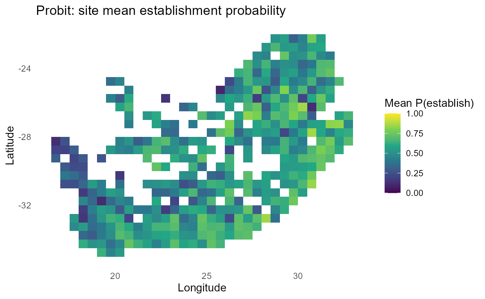
# ---- 3) Expected # establishing invaders per site (sum of probabilities) ----
p_site_exp = p_long |>
dplyr::group_by(site) |>
dplyr::summarise(expected_n = sum(prob, na.rm = TRUE), .groups = "drop") |>
dplyr::left_join(site_df, by = "site")
p_exp = ggplot2::ggplot(p_site_exp, ggplot2::aes(x = x, y = y, fill = expected_n)) +
ggplot2::geom_tile() +
ggplot2::scale_fill_viridis_c(name = "Expected # establishing") +
ggplot2::labs(title = "Probit: expected # establishing invaders (per site)",
x = "Longitude", y = "Latitude") +
ggplot2::theme_minimal(base_size = 12) +
ggplot2::theme(panel.grid = ggplot2::element_blank())
if (exists("rsa")) p_exp = p_exp + ggplot2::geom_sf(data = rsa, inherit.aes = FALSE,
fill = NA, color = "black", size = 0.3)
print(p_exp)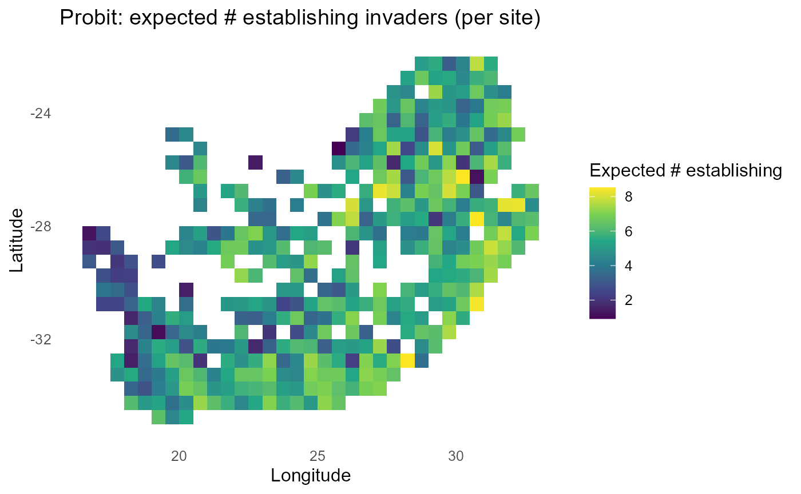
# ---- 4) Optional: discrete “risk bands” (quintiles) for mean probability ----
q = stats::quantile(p_site$mean_p, probs = seq(0,1,0.2), na.rm = TRUE)
if (length(unique(q)) < 6L) {
q = seq(min(p_site$mean_p, na.rm = TRUE), max(p_site$mean_p, na.rm = TRUE), length.out = 6L)
}
p_site$band = cut(p_site$mean_p, breaks = q, include.lowest = TRUE,
labels = c("very-low","low","medium","high","very-high"))
p_band = ggplot2::ggplot(p_site, ggplot2::aes(x = x, y = y, fill = band)) +
ggplot2::geom_tile() +
ggplot2::scale_fill_brewer(palette = "RdYlBu", direction = 1, name = "Site invasibility") +
ggplot2::labs(title = "Probit: site invasibility bands (quintiles)",
x = "Longitude", y = "Latitude") +
ggplot2::theme_minimal(base_size = 12) +
ggplot2::theme(panel.grid = ggplot2::element_blank())
if (exists("rsa")) p_band = p_band + ggplot2::geom_sf(data = rsa, inherit.aes = FALSE,
fill = NA, color = "black", size = 0.3)
print(p_band)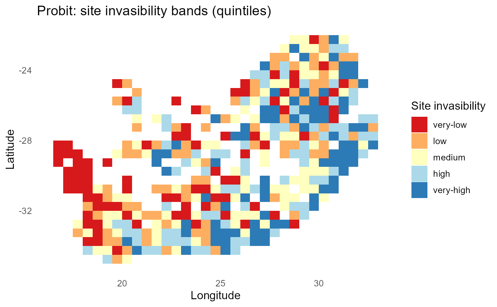
# ---- 5) Quick invader ranking by mean establishment probability --------------
invader_rank = p_long |>
dplyr::group_by(invader) |>
dplyr::summarise(mean_p = mean(prob, na.rm = TRUE), .groups = "drop") |>
dplyr::arrange(dplyr::desc(mean_p))
print(head(invader_rank, 10))
#> # A tibble: 10 × 2
#> invader mean_p
#> <chr> <dbl>
#> 1 inv5 0.549
#> 2 inv6 0.542
#> 3 inv10 0.542
#> 4 inv7 0.537
#> 5 inv4 0.532
#> 6 inv9 0.524
#> 7 inv8 0.524
#> 8 inv3 0.505
#> 9 inv1 0.483
#> 10 inv2 0.477:chart_with_upwards_trend: Figure 6: Probit-linked establishment probabilities with \(\sigma = 1\). Panels show site-mean \(P\), expected count of establishing invaders, and discrete bands; mid-probability contours track \(\lambda \approx 0\).
:bulb: Interpretation: Smaller \(\sigma\) → sharper transitions around \(\lambda=0\); larger \(\sigma\) → flatter maps.
Method B: Logistic \(P=\text{logit}^{-1}(\lambda/\tau)\)
A logistic link with scale \(\tau\) produces smooth, interpretable probability fields.
outL = invasimapr::compute_establishment_probability(
r_is_z, C_is_z, S_is_z,
gamma = gamma, alpha = alpha, beta = beta,
method = "logit", tau = 1,
site_df = site_df, return_long = TRUE, make_plots = TRUE
)
str(outL, 1)
#> List of 7
#> $ p_is : num [1:415, 1:10] 0.3055 0.0941 0.5594 0.7702 0.4212 ...
#> ..- attr(*, "dimnames")=List of 2
#> $ lambda_is : num [1:415, 1:10] -0.821 -2.265 0.239 1.209 -0.318 ...
#> ..- attr(*, "dimnames")=List of 2
#> $ sigma_used : NULL
#> $ method : chr "logit"
#> $ option_label: chr "logit"
#> $ prob_long : tibble [4,150 × 7] (S3: tbl_df/tbl/data.frame)
#> $ plots :List of 3:bar_chart: Analogous to the probit workflow but with a logistic link scaled by \(\tau\). Outputs site-mean probability, expected counts, quintile bands, and a ranking of invaders by mean \(P\).
# ---- 1) Get a long table (site × invader → probability) ----------------------
p_long = if (!is.null(outL$p_long)) {
outL$p_long
} else if (!is.null(outL$prob_long)) {
outL$prob_long
} else if (!is.null(outL$lambda_long)) {
# Recompute from lambda using the same tau you passed in (default 1)
tau_used = attr(outL, "tau") %||% 1
dplyr::mutate(outL$lambda_long, p = plogis(lambda / tau_used))
} else {
stop("No probability table found in outL (looked for p_long / prob_long / lambda_long).")
}
p_long = p_long |>
dplyr::rename(prob = dplyr::any_of(c("p","prob","probability","val"))) |>
dplyr::select(site, invader, prob) |>
dplyr::mutate(site = as.character(site), invader = as.character(invader))
# ---- 2) Site mean probability map -------------------------------------------
p_site = p_long |>
dplyr::group_by(site) |>
dplyr::summarise(mean_p = mean(prob, na.rm = TRUE), .groups = "drop") |>
dplyr::left_join(site_df, by = "site")
p_map = ggplot2::ggplot(p_site, ggplot2::aes(x = x, y = y, fill = mean_p)) +
ggplot2::geom_tile() +
ggplot2::scale_fill_viridis_c(name = "Mean P(establish)", limits = c(0,1)) +
ggplot2::labs(title = "Logistic: site mean establishment probability",
x = "Longitude", y = "Latitude") +
ggplot2::theme_minimal(base_size = 12) +
ggplot2::theme(panel.grid = ggplot2::element_blank())
if (exists("rsa")) p_map = p_map + ggplot2::geom_sf(data = rsa, inherit.aes = FALSE,
fill = NA, color = "black", size = 0.3)
print(p_map)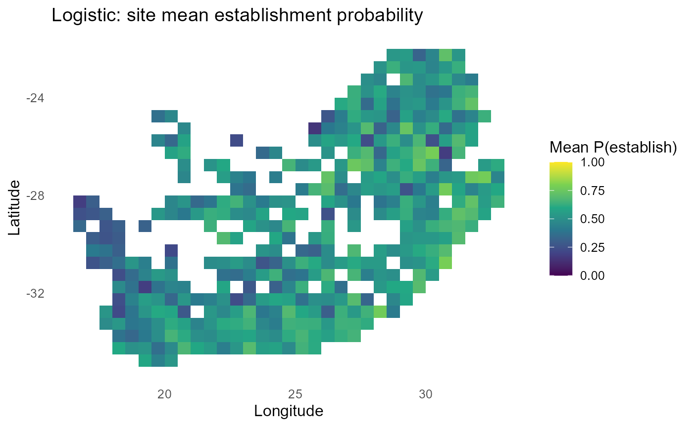
# ---- 3) Expected # establishing invaders per site ----------------------------
p_site_exp = p_long |>
dplyr::group_by(site) |>
dplyr::summarise(expected_n = sum(prob, na.rm = TRUE), .groups = "drop") |>
dplyr::left_join(site_df, by = "site")
p_exp = ggplot2::ggplot(p_site_exp, ggplot2::aes(x = x, y = y, fill = expected_n)) +
ggplot2::geom_tile() +
ggplot2::scale_fill_viridis_c(name = "Expected # establishing") +
ggplot2::labs(title = "Logistic: expected # establishing invaders (per site)",
x = "Longitude", y = "Latitude") +
ggplot2::theme_minimal(base_size = 12) +
ggplot2::theme(panel.grid = ggplot2::element_blank())
if (exists("rsa")) p_exp = p_exp + ggplot2::geom_sf(data = rsa, inherit.aes = FALSE,
fill = NA, color = "black", size = 0.3)
print(p_exp)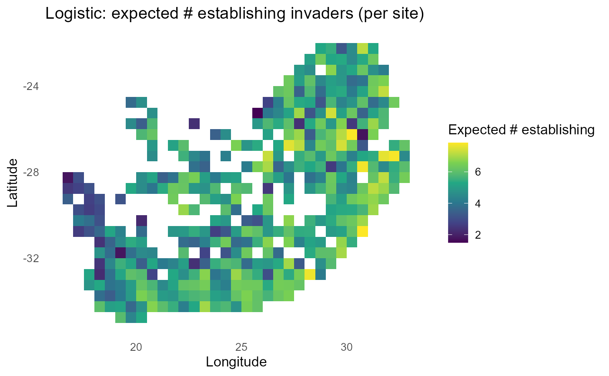
# ---- 4) Discrete “risk bands” (quintiles) for mean probability ---------------
q = stats::quantile(p_site$mean_p, probs = seq(0,1,0.2), na.rm = TRUE)
if (length(unique(q)) < 6L) {
q = seq(min(p_site$mean_p, na.rm = TRUE), max(p_site$mean_p, na.rm = TRUE), length.out = 6L)
}
p_site$band = cut(p_site$mean_p, breaks = q, include.lowest = TRUE,
labels = c("very-low","low","medium","high","very-high"))
p_band = ggplot2::ggplot(p_site, ggplot2::aes(x = x, y = y, fill = band)) +
ggplot2::geom_tile() +
ggplot2::scale_fill_brewer(palette = "RdYlBu", direction = 1, name = "Site invasibility") +
ggplot2::labs(title = "Logistic: site invasibility bands (quintiles)",
x = "Longitude", y = "Latitude") +
ggplot2::theme_minimal(base_size = 12) +
ggplot2::theme(panel.grid = ggplot2::element_blank())
if (exists("rsa")) p_band = p_band + ggplot2::geom_sf(data = rsa, inherit.aes = FALSE,
fill = NA, color = "black", size = 0.3)
print(p_band)
# ---- 5) Quick invader ranking ------------------------------------------------
invader_rank = p_long |>
dplyr::group_by(invader) |>
dplyr::summarise(mean_p = mean(prob, na.rm = TRUE), .groups = "drop") |>
dplyr::arrange(dplyr::desc(mean_p))
print(head(invader_rank, 10))
#> # A tibble: 10 × 2
#> invader mean_p
#> <chr> <dbl>
#> 1 inv5 0.532
#> 2 inv10 0.530
#> 3 inv6 0.529
#> 4 inv7 0.523
#> 5 inv4 0.519
#> 6 inv9 0.516
#> 7 inv8 0.511
#> 8 inv3 0.498
#> 9 inv1 0.478
#> 10 inv2 0.474:chart_with_upwards_trend: Figure 7: Logistic-linked establishment probabilities with \(\tau = 1\). Spatial gradients resemble the probit view but with logistic tails; tuning \(\tau\) shifts the steepness of transitions around \(\lambda = 0\).
:bulb: Interpretation: Tune \(\tau\) until mid-probability bands match ecological expectations (e.g., near convex-hull boundaries).
Method C: Hard rule \(P=\mathbb{I}\{\lambda>0\}\)
A crisp decision surface for thresholded planning and auditing.
library(ggplot2)
outH = invasimapr::compute_establishment_probability(
r_is_z, C_is_z, S_is_z,
gamma = gamma, alpha = alpha, beta = beta,
method = "hard",
site_df = site_df, return_long = TRUE, make_plots = TRUE
)
str(outH, 1)
#> List of 7
#> $ p_is : int [1:415, 1:10] 0 0 1 1 0 0 1 1 0 1 ...
#> ..- attr(*, "dimnames")=List of 2
#> $ lambda_is : num [1:415, 1:10] -0.821 -2.265 0.239 1.209 -0.318 ...
#> ..- attr(*, "dimnames")=List of 2
#> $ sigma_used : NULL
#> $ method : chr "hard"
#> $ option_label: chr "hard"
#> $ prob_long : tibble [4,150 × 7] (S3: tbl_df/tbl/data.frame)
#> $ plots :List of 3:bar_chart: Imposes a deterministic threshold \(P_{is}=\mathbb{1}\{\lambda_{is} > 0\}\). Produces maps of the count and fraction of invaders establishing per site, optional quintile bands on the fraction, and an invader ranking by percent of sites with \(\lambda > 0\).
# Build probability long table (0/1 under hard rule)
p_long = if (!is.null(outH$p_long)) {
outH$p_long
} else if (!is.null(outH$prob_long)) {
outH$prob_long
} else if (!is.null(outH$lambda_long)) {
dplyr::mutate(outH$lambda_long, p = as.numeric(lambda > 0))
} else stop("No probability table found in outH.")
p_long = p_long |>
dplyr::rename(prob = dplyr::any_of(c("p","prob","probability","val"))) |>
dplyr::select(site, invader, prob) |>
dplyr::mutate(site = as.character(site), invader = as.character(invader))
# ---- Site summaries: COUNT and PERCENT ---------------------------------------
site_sum = p_long |>
dplyr::group_by(site) |>
dplyr::summarise(
n_est = as.integer(sum(prob, na.rm = TRUE)), # whole-number count
n_eval = sum(!is.na(prob)), # how many invaders evaluated
frac = ifelse(n_eval > 0, n_est / n_eval, NA_real_) # percent basis (0..1)
) |>
dplyr::left_join(site_df, by = "site")
# ---- Map 1: COUNT of establishing invaders ($\lambda$>0) ------------------------------
p_count = ggplot2::ggplot(site_sum, ggplot2::aes(x = x, y = y, fill = n_est)) +
ggplot2::geom_tile() +
ggplot2::scale_fill_viridis_c(name = "Count (\u03BB>0)",
labels = function(x) formatC(x, digits = 0, format = "f")) +
ggplot2::labs(title = "Hard rule: count of establishing invaders per site",
x = "Longitude", y = "Latitude") +
ggplot2::theme_minimal(base_size = 12) +
ggplot2::theme(panel.grid = ggplot2::element_blank())
if (exists("rsa")) p_count = p_count +
ggplot2::geom_sf(data = rsa, inherit.aes = FALSE, fill = NA, color = "black", size = 0.3)
print(p_count)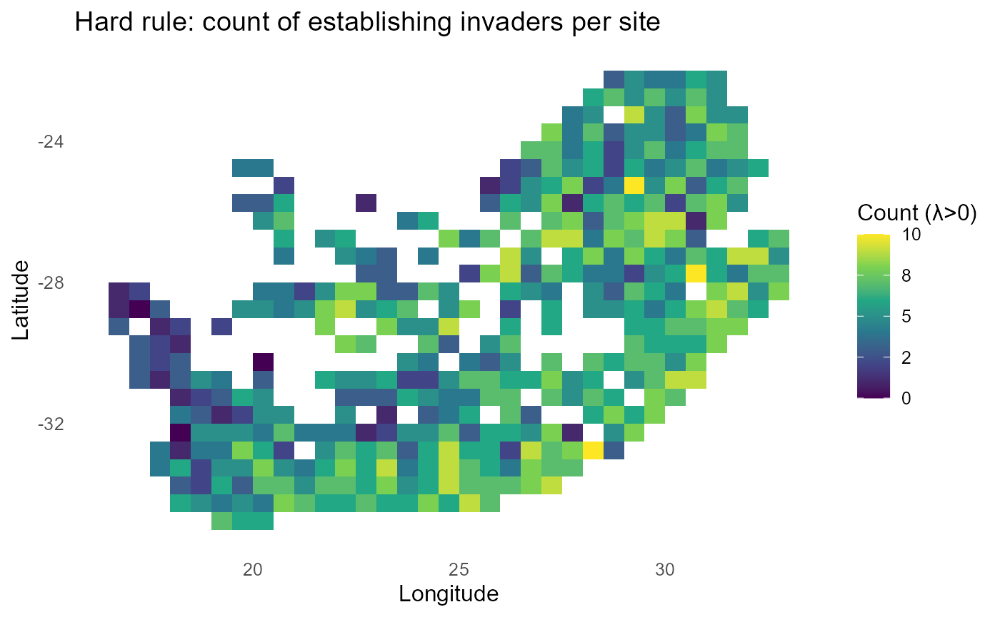
# ---- Map 2: PERCENT of invaders establishing ($\lambda$>0) ----------------------------
p_percent = ggplot2::ggplot(site_sum, ggplot2::aes(x = x, y = y, fill = frac)) +
ggplot2::geom_tile() +
ggplot2::scale_fill_viridis_c(name = "% establishing",
limits = c(0,1), labels = scales::percent_format(accuracy = 1)) +
ggplot2::labs(title = "Hard rule: percent of invaders establishing per site",
x = "Longitude", y = "Latitude") +
ggplot2::theme_minimal(base_size = 12) +
ggplot2::theme(panel.grid = ggplot2::element_blank())
if (exists("rsa")) p_percent = p_percent +
ggplot2::geom_sf(data = rsa, inherit.aes = FALSE, fill = NA, color = "black", size = 0.3)
print(p_percent)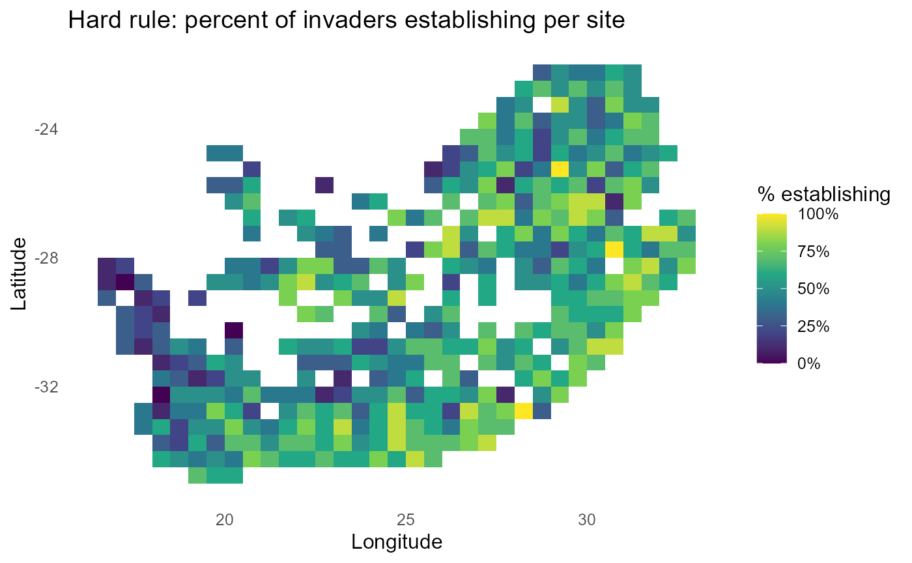
# ---- Optional: discrete quintile bands on % (communication-friendly) ----------
q = stats::quantile(site_sum$frac, probs = seq(0,1,0.2), na.rm = TRUE)
if (length(unique(q)) < 6L) { # fallback if ties collapse bins
q = seq(min(site_sum$frac, na.rm = TRUE), max(site_sum$frac, na.rm = TRUE), length.out = 6L)
}
site_sum$band = cut(site_sum$frac, breaks = q, include.lowest = TRUE,
labels = c("very-low","low","medium","high","very-high"))
p_bands = ggplot2::ggplot(site_sum, ggplot2::aes(x = x, y = y, fill = band)) +
ggplot2::geom_tile() +
ggplot2::scale_fill_brewer(palette = "RdYlBu", direction = 1, name = "Site invasibility") +
ggplot2::labs(title = "Hard rule: invasibility bands (quintiles of % establishing)",
x = "Longitude", y = "Latitude") +
ggplot2::theme_minimal(base_size = 12) +
ggplot2::theme(panel.grid = ggplot2::element_blank())
if (exists("rsa")) p_bands = p_bands +
ggplot2::geom_sf(data = rsa, inherit.aes = FALSE, fill = NA, color = "black", size = 0.3)
print(p_bands)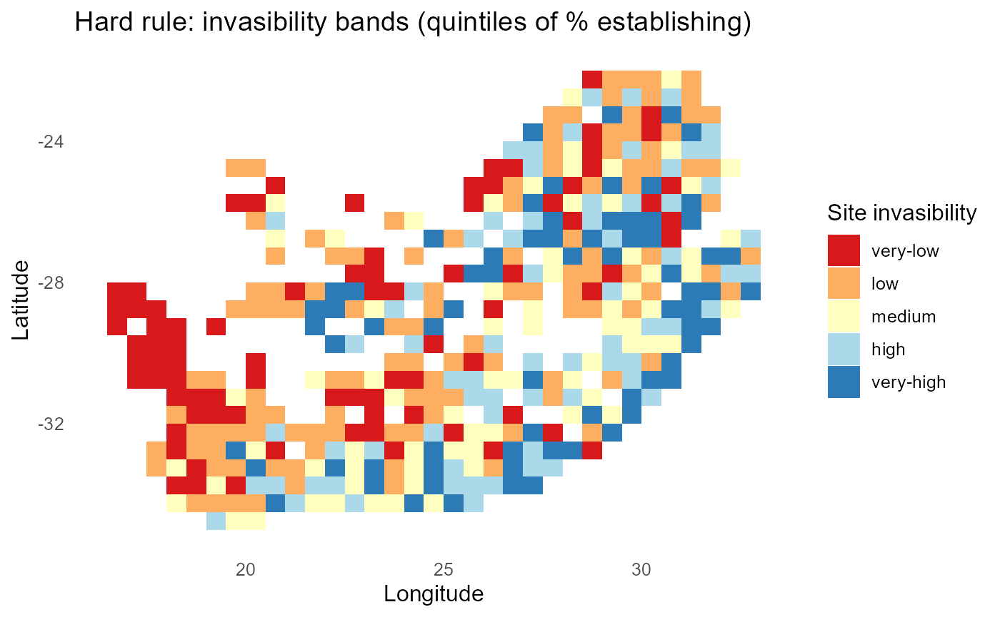
# ---- Invader ranking as % of sites (not mean) ---------------------------------
invader_rank = p_long |>
dplyr::group_by(invader) |>
dplyr::summarise(pct_sites = mean(prob, na.rm = TRUE)) |>
dplyr::mutate(pct_sites = scales::percent(pct_sites, accuracy = 1)) |>
dplyr::arrange(dplyr::desc(pct_sites))
print(invader_rank)
#> # A tibble: 10 × 2
#> invader pct_sites
#> <chr> <chr>
#> 1 inv10 59%
#> 2 inv5 59%
#> 3 inv7 58%
#> 4 inv4 55%
#> 5 inv6 55%
#> 6 inv8 55%
#> 7 inv9 54%
#> 8 inv3 53%
#> 9 inv1 48%
#> 10 inv2 48%:chart_with_upwards_trend: Figure 8: Binary establishment under a hard threshold. Count and percent maps identify sites prone to establishment by many invaders; rankings report the breadth of each invader’s spatial viability.
:bulb: Interpretation: Pair a count map (# invaders establishing per site) with per-invader 0/1 facets for rapid triage.
Method D: Probit with predictive SD (uncertainty-aware)
Use cell-wise predictive SD combining fixed-effect uncertainty (from
vcov) and residual noise so that low-information regions
shrink toward 0.5.
Q_inv = fit$traits$Q_inv
# Build a sigma matrix from your auxiliary GLMM
sigma_mat = sigma_mat_from_vcov(
fit = fit$sensitivities$fit_coeffs, # GLMM on r_z, C_z, S_z × trait-plane terms
r_is_z = r_is_z, C_is_z = C_is_z, S_is_z = S_is_z,
Q_inv = Q_inv,
add_resid = TRUE # predictive SD, not just mean-SE
)
outPSD = invasimapr::compute_establishment_probability(
r_is_z, C_is_z, S_is_z,
gamma = gamma, alpha = alpha, beta = beta,
method = "probit",
predictive = TRUE, sigma_mat = sigma_mat,
site_df = site_df, return_long = TRUE, make_plots = TRUE,
option_label = "Probit (predictive SD)"
)
str(outPSD, 1)
#> List of 7
#> $ p_is : num [1:415, 1:10] 0.128158 0.000921 0.629142 0.952504 0.330739 ...
#> ..- attr(*, "dimnames")=List of 2
#> $ lambda_is : num [1:415, 1:10] -0.821 -2.265 0.239 1.209 -0.318 ...
#> ..- attr(*, "dimnames")=List of 2
#> $ sigma_used : num [1:415, 1:10] 0.724 0.727 0.724 0.724 0.726 ...
#> ..- attr(*, "dimnames")=List of 2
#> $ method : chr "probit"
#> $ option_label: chr "Probit (predictive SD)"
#> $ prob_long : tibble [4,150 × 7] (S3: tbl_df/tbl/data.frame)
#> $ plots :List of 3:bar_chart: Displays (i) site-mean probability incorporating predictive SD, (ii) a map of the site-mean predictive SD to localise uncertainty, and (iii) the distribution of \(P\) across all site-invader pairs to diagnose shrinkage toward 0.5.
`%||%` = function(a, b) if (!is.null(a)) a else b
# ---- Prepare long probability table ------------------------------------------
p_long = if (!is.null(outPSD$prob_long)) outPSD$prob_long else outPSD$p_long
stopifnot(!is.null(p_long))
p_long = p_long |>
dplyr::select(site, invader, val, x, y) |>
dplyr::mutate(site = as.character(site), invader = as.character(invader))
# ---- Site-mean probability map ------------------------------------------------
site_mean = p_long |>
dplyr::group_by(site, x, y) |>
dplyr::summarise(p_mean = mean(val, na.rm = TRUE), .groups = "drop")
p_site = ggplot2::ggplot(site_mean, ggplot2::aes(x = x, y = y, fill = p_mean)) +
ggplot2::geom_tile() +
ggplot2::scale_fill_viridis_c(name = "Mean P(estab.)", limits = c(0,1)) +
ggplot2::labs(title = "Probit (predictive SD): site-mean establishment probability",
x = "Longitude", y = "Latitude") +
ggplot2::theme_minimal(base_size = 12) +
ggplot2::theme(panel.grid = ggplot2::element_blank())
if (exists("rsa")) p_site = p_site +
ggplot2::geom_sf(data = rsa, inherit.aes = FALSE, fill = NA, color = "black", size = 0.35)
print(p_site)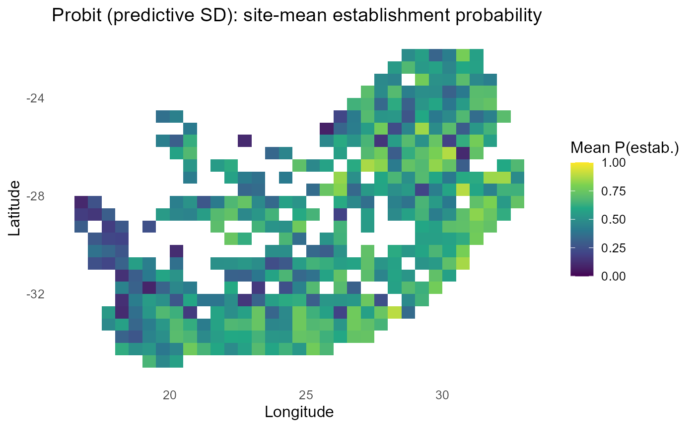
# ---- Uncertainty map: site-mean predictive SD (σ) -----------------------------
# ---- Build site-mean predictive SD (σ) safely --------------------------------
stopifnot(exists("sigma_mat"), exists("site_df"))
site_ids = as.character(site_df$site)
# Decide whether sites are in rows or columns
sites_are_rows = !is.null(rownames(sigma_mat)) &&
mean(rownames(sigma_mat) %in% site_ids) > 0.5
sites_are_cols = !is.null(colnames(sigma_mat)) &&
mean(colnames(sigma_mat) %in% site_ids) > 0.5
if (sites_are_rows) {
sigma_df = data.frame(
site = rownames(sigma_mat),
sigma_mean = rowMeans(sigma_mat, na.rm = TRUE),
row.names = NULL,
check.names = FALSE
)
} else if (sites_are_cols) {
sigma_df = data.frame(
site = colnames(sigma_mat),
sigma_mean = colMeans(sigma_mat, na.rm = TRUE),
row.names = NULL,
check.names = FALSE
)
} else {
stop("Could not match site IDs to sigma_mat rownames/colnames.")
}
sigma_df = sigma_df |>
dplyr::mutate(site = as.character(site)) |>
dplyr::left_join(site_df, by = "site")
# ---- Plot the uncertainty map -------------------------------------------------
p_sigma = ggplot2::ggplot(sigma_df, ggplot2::aes(x = x, y = y, fill = sigma_mean)) +
ggplot2::geom_tile() +
ggplot2::scale_fill_viridis_c(name = "Predictive SD (σ)") +
ggplot2::labs(title = "Uncertainty map: site-mean predictive SD",
x = "Longitude", y = "Latitude") +
ggplot2::theme_minimal(base_size = 12) +
ggplot2::theme(panel.grid = ggplot2::element_blank())
if (exists("rsa")) p_sigma = p_sigma +
ggplot2::geom_sf(data = rsa, inherit.aes = FALSE, fill = NA, color = "black", size = 0.35)
print(p_sigma)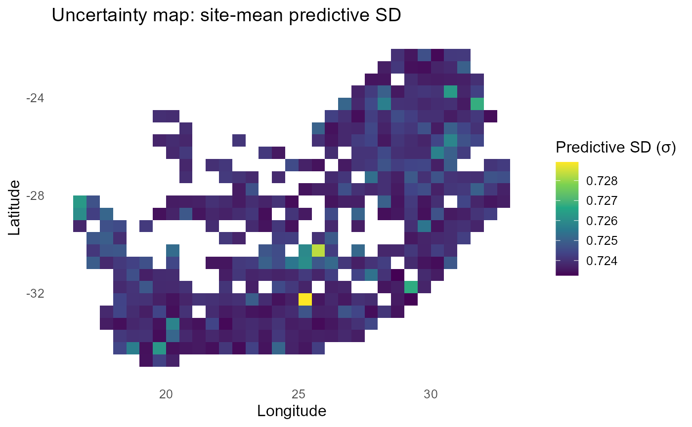
# ---- Distribution of probabilities (all invader × site) -----------------------
p_hist = ggplot2::ggplot(p_long, ggplot2::aes(x = val, fill = ..x..)) +
ggplot2::geom_histogram(bins = 40, color = "grey30") +
ggplot2::scale_fill_viridis_c(option = "magma", guide = "none") +
ggplot2::labs(title = "Probit (predictive SD): distribution of P(establishment)",
x = "Probability", y = "Frequency") +
ggplot2::theme_minimal(base_size = 12)
print(p_hist)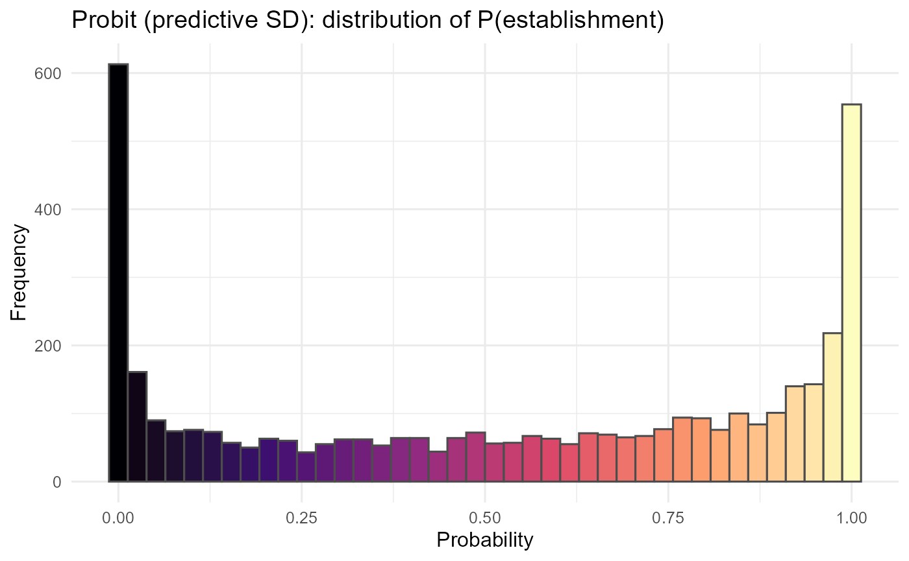
:chart_with_upwards_trend: Figure 9: Incorporating predictive SD damps extreme probabilities in low-information cells, pulling them toward 0.5. The site-mean P map highlights where establishment remains plausible after this shrinkage, while the uncertainty map (σ) pinpoints data-poor or extrapolative regions (often at trait-space edges or sparse sites) where decisions should be more cautious or targeted for new surveys.
:bulb: Interpretation: Also print the uncertainty map (site-mean \(\sigma\)) to show where estimates are less certain (trait-space edges; data-poor sites).
Minimal fallback when you only have \(\lambda\) (Optional)
If \(\lambda_{is}\) is already computed, you can still produce probabilities with a scalar scale:
outQuick = invasimapr::compute_establishment_probability(
lambda_is = lambda_is,
method = "probit", sigma = 1,
site_df = site_df, return_long = TRUE, make_plots = TRUE
)
str(outQuick, 1)
#> List of 7
#> $ p_is : num [1:415, 1:10] 2.77e-02 1.14e-07 1.13e-01 5.87e-01 1.01e-01 ...
#> ..- attr(*, "dimnames")=List of 2
#> $ lambda_is : num [1:415, 1:10] -1.92 -5.18 -1.21 0.22 -1.28 ...
#> ..- attr(*, "dimnames")=List of 2
#> $ sigma_used : num 1
#> $ method : chr "probit"
#> $ option_label: chr "probit"
#> $ prob_long : tibble [4,150 × 7] (S3: tbl_df/tbl/data.frame)
#> $ plots :List of 3:bar_chart: When only \(\lambda\) is available, converts to probabilities with a scalar \(\sigma\) and maps the site-mean \(P\) plus its across-cell distribution; patterns mirror \(\lambda\) without uncertainty adaptation.
# ---- Prepare long probability table ------------------------------------------
p_long_q = if (!is.null(outQuick$prob_long)) outQuick$prob_long else outQuick$p_long
stopifnot(!is.null(p_long_q))
p_long_q = p_long_q |>
dplyr::select(site, invader, val, x, y) |>
dplyr::mutate(site = as.character(site), invader = as.character(invader))
# ---- Site-mean probability map ------------------------------------------------
site_mean_q = p_long_q |>
dplyr::group_by(site, x, y) |>
dplyr::summarise(p_mean = mean(val, na.rm = TRUE), .groups = "drop")
p_site_q = ggplot2::ggplot(site_mean_q, ggplot2::aes(x = x, y = y, fill = p_mean)) +
ggplot2::geom_tile() +
ggplot2::scale_fill_viridis_c(name = "Mean P(estab.)", limits = c(0,1)) +
ggplot2::labs(title = "Quick probit (scalar σ): site-mean establishment probability",
x = "Longitude", y = "Latitude") +
ggplot2::theme_minimal(base_size = 12) +
ggplot2::theme(panel.grid = ggplot2::element_blank())
if (exists("rsa")) p_site_q = p_site_q +
ggplot2::geom_sf(data = rsa, inherit.aes = FALSE, fill = NA, color = "black", size = 0.35)
print(p_site_q)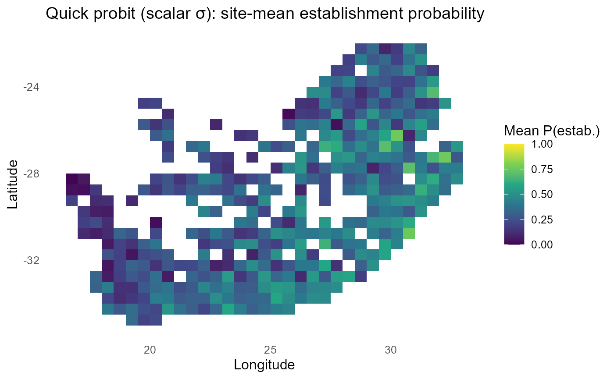
# ---- Distribution of probabilities -------------------------------------------
p_hist_q = ggplot2::ggplot(p_long_q, ggplot2::aes(x = val, fill = ..x..)) +
ggplot2::geom_histogram(bins = 40, color = "grey30") +
ggplot2::scale_fill_viridis_c(option = "magma", guide = "none") +
ggplot2::labs(title = "Quick probit (scalar σ): distribution of P(establishment)",
x = "Probability", y = "Frequency") +
ggplot2::theme_minimal(base_size = 12)
print(p_hist_q)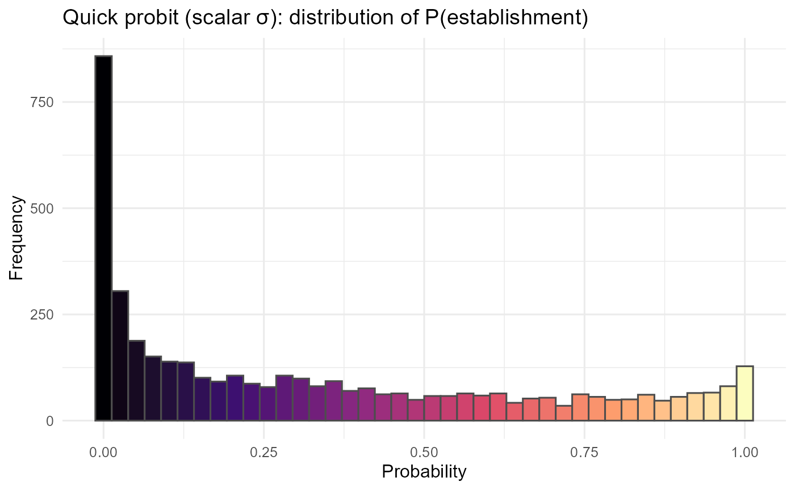
:chart_with_upwards_trend: Figure 10: Using a single, scalar \(\sigma\) converts \(\lambda\) to probabilities quickly, preserving relative patterns but without uncertainty adaptation. High or low \(\lambda\) regions stay extreme; consider the predictive-SD approach when you need risk that reflects confidence, not just the mean signal.
:bulb: Section takeaway
- Use Option A to anchor interpretation;
- switch to B for a single global abiotic slope;
- choose C when trait × abiotic interactions are real;
- add D when site heterogeneity matters;
- reserve E for justified facilitation.
- Then select a probability method that matches your communication needs i.e. logistic/probit for smooth risk maps, hard for thresholded planning, and probit with predictive SD when conveying uncertainty, is essential.
Session information
sessionInfo()
#> R version 4.5.2 (2025-10-31 ucrt)
#> Platform: x86_64-w64-mingw32/x64
#> Running under: Windows 11 x64 (build 26200)
#>
#> Matrix products: default
#> LAPACK version 3.12.1
#>
#> locale:
#> [1] LC_COLLATE=English_South Africa.utf8 LC_CTYPE=English_South Africa.utf8
#> [3] LC_MONETARY=English_South Africa.utf8 LC_NUMERIC=C
#> [5] LC_TIME=English_South Africa.utf8
#>
#> time zone: Africa/Johannesburg
#> tzcode source: internal
#>
#> attached base packages:
#> [1] stats graphics grDevices utils datasets methods base
#>
#> other attached packages:
#> [1] ggplot2_4.0.3
#>
#> loaded via a namespace (and not attached):
#> [1] Rdpack_2.6.6 DBI_1.3.0 gridExtra_2.3.1
#> [4] permute_0.9-10 sandwich_3.1-1 rlang_1.2.0
#> [7] magrittr_2.0.5 multcomp_1.4-28 otel_0.2.0
#> [10] matrixStats_1.5.0 e1071_1.7-17 compiler_4.5.2
#> [13] mgcv_1.9-4 systemfonts_1.3.2 vctrs_0.7.3
#> [16] stringr_1.6.0 pkgconfig_2.0.3 shape_1.4.6.1
#> [19] fastmap_1.2.0 backports_1.5.1 labeling_0.4.3
#> [22] utf8_1.2.6 rmarkdown_2.31 nloptr_2.2.1
#> [25] ragg_1.5.2 purrr_1.2.2 xfun_0.59
#> [28] glmnet_4.1-10 cachem_1.1.0 jsonlite_2.0.0
#> [31] terra_1.9-34 broom_1.0.13 parallel_4.5.2
#> [34] cluster_2.1.8.2 R6_2.6.1 bslib_0.11.0
#> [37] stringi_1.8.7 RColorBrewer_1.1-3 car_3.1-5
#> [40] boot_1.3-32 jquerylib_0.1.4 numDeriv_2016.8-1.1
#> [43] estimability_2.0.0 Rcpp_1.1.1-1.1 iterators_1.0.14
#> [46] knitr_1.51 zoo_1.8-15 Matrix_1.7-5
#> [49] splines_4.5.2 glmmTMB_1.1.14 tidyselect_1.2.1
#> [52] viridis_0.6.5 rstudioapi_0.19.0 abind_1.4-8
#> [55] yaml_2.3.12 vegan_2.7-5 invasimapr_0.2.0
#> [58] TMB_1.9.21 codetools_0.2-20 lattice_0.22-9
#> [61] tibble_3.3.1 withr_3.0.3 S7_0.2.2
#> [64] coda_0.19-4.1 evaluate_1.0.5 desc_1.4.3
#> [67] survival_3.8-6 sf_1.1-1 units_1.0-1
#> [70] proxy_0.4-29 pillar_1.11.1 ggpubr_0.6.3
#> [73] carData_3.0-6 KernSmooth_2.23-26 foreach_1.5.2
#> [76] reformulas_0.4.4 insight_1.5.1 generics_0.1.4
#> [79] fuzzyjoin_0.1.8 scales_1.4.0 minqa_1.2.8
#> [82] xtable_1.8-8 class_7.3-23 glue_1.8.1
#> [85] pheatmap_1.0.13 emmeans_2.0.3 tools_4.5.2
#> [88] data.table_1.18.4 lme4_2.0-1 ggsignif_0.6.4
#> [91] fs_2.1.0 mvtnorm_1.4-1 grid_4.5.2
#> [94] tidyr_1.3.2 rbibutils_2.4.1 nlme_3.1-169
#> [97] performance_0.17.0 Formula_1.2-5 cli_3.6.6
#> [100] textshaping_1.0.5 viridisLite_0.4.3 dplyr_1.2.1
#> [103] gtable_0.3.6 rstatix_0.7.3 sass_0.4.10
#> [106] digest_0.6.39 classInt_0.4-11 ggrepel_0.9.8
#> [109] TH.data_1.1-4 htmlwidgets_1.6.4 farver_2.1.2
#> [112] htmltools_0.5.9 pkgdown_2.2.0 factoextra_2.0.0
#> [115] lifecycle_1.0.5 MASS_7.3-65